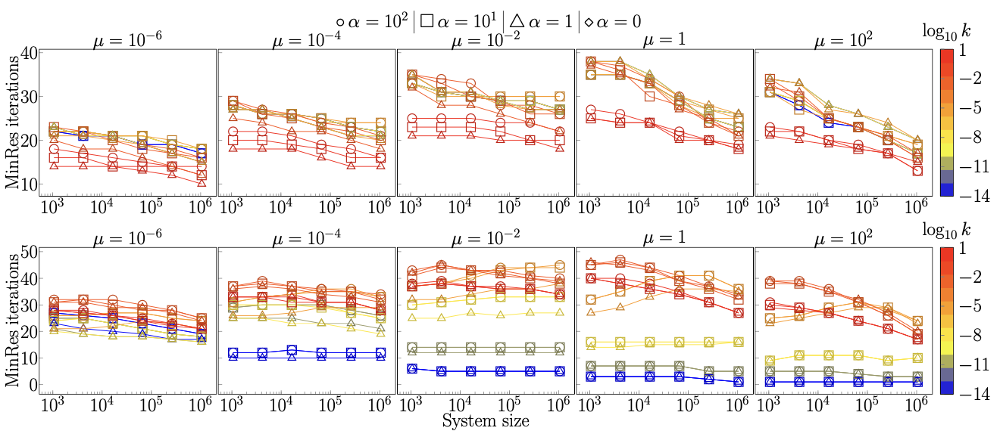
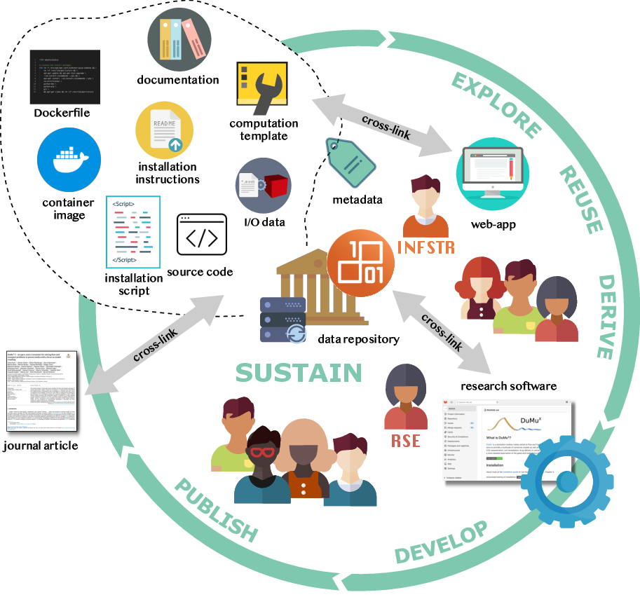

Research topics
Research topics
Embedded networks
One of my ongoing research topics concerns the development of mixed-dimensional models for flow and transport processes in porous media with embedded network systems.
Many natural and technical porous media contain network structures to facilitate transport into and from these materials that usually have a low permeability. Examples are manifold: blood vessel and lymph vessel networks in biological tissue, the bile duct of the liver, the mycelium of fungi, root-soil interaction, venation of leaves, heat exchangers, geothermal wells, man-made tunnel systems or Karst formations.
When modeling transport in such systems, the accurate of the exchange of mass and energy between network and porous medium is key. But the networks can be very thin, which has the consequence that standard numerical methods become computationally expensive and/or provide inaccurate approximations to the underlying solution of the partial differential equation describing the transport process.

Contribution: I desgined a numerical method for a mixed-dimensional description of such systems that allows to simulate transport in the network, the embedding porous medium, while accurately approximating any exchange. I applied the developed method to different applications and demonstrated its efficacy in multiple benchmark cases.
Results: The idea of the developed mixed-dimensional method is based on introducing a numerical parameter describing the virtual local extent of network segments independent of its physical size. This approach is combined with a reconstruction algorithm to approximate the model state variables at the physical network-bulk interface by means of local analytical solution to the partial differential equation describing the transport phenomenon. In this way, a coarse grid discretization (relative to the physical size of network segments) can be use while maintaining an accurate approximation of the exchange.
-
Projection-based resolved interface 1D-3D mixed-dimension method for embedded tubular network systems. T Koch (2022). Computers & Mathematics with Applications
-
Nonlinear mixed-dimension model for embedded tubular networks with application to root water uptake. T Koch, H Wu, M Schneider (2022). Journal of Computational Physics
-
A new and consistent well model for one-phase flow in anisotropic porous media using a distributed source model. T Koch, R Helmig, M Schneider (2020). Journal of Computational Physics
-
Modeling tissue perfusion in terms of 1d-3d embedded mixed-dimension coupled problems with distributed sources. T Koch, M Schneider, R Helmig, P Jenny (2020). Journal of Computational Physics
-
Mixed-dimension models for flow and transport processes in porous media with embedded tubular network systems. T Koch (2020). PhD thesis, University of Stuttgart. Stuttgart: Eigenverlag des Instituts für Wasser- und Umweltsystemmodellierung der Universität Stuttgart
-
The Dune FoamGrid implementation for surface and network grids. O Sander, T Koch, N Schröder, B Flemisch (2017). Archive of Numerical Software
Funding: The work in this research topic is supported by the European Union’s Horizon 2020 Research and Innovation programme under the Marie Skłodowska-Curie Actions Grant agreement No 801133 (Scientia fellows II), project “Advanced in-silico transport models for vascularized tissues with focus on the brain.”, and previously by the German Research Foundation (DGF), within the Cluster of Excellence in Simulation Technology (EXC 310), and the Collaborative Research Center on Interface-Driven Multi-Field Processes in Porous Media (SFB 1313, Project Number 327154368).
Numerics of multi-physics PDE problems
One focus of my research is designing robust numerical algorithms and software for solving coupled systems of partial differential equations describing multi-physics problems.
Results: The open-source simulator DuMux is a state-of-the-art numerics code that facilitates the implementation of monolithic and sequential model coupling schemes and discratization methods. We designed the first parameter-robust preconditioner for the Stokes-Darcy problem for different discretization schemes.

-
Stable and locally mass-and momentum-conservative control-volume finite-element schemes for the Stokes problem. M Schneider, T Koch (2023+). ArXiv preprint
-
A fully implicit coupled pore-network/free-flow model for the pore-scale simulation of drying processes. K Weishaupt, T Koch, R Helmig (2022). Drying Technology
-
Robust Monolithic Solvers for the Stokes–Darcy Problem with the Darcy Equation in Primal Form. WM Boon, T Koch, M Kuchta, KA Mardal (2022). SIAM Journal on Scientific Computing
-
Modeling tissue perfusion in terms of 1d-3d embedded mixed-dimension coupled problems with distributed sources. T Koch, M Schneider, R Helmig, P Jenny (2020). Journal of Computational Physics
-
DuMux 3–an open-source simulator for solving flow and transport problems in porous media with a focus on model coupling. T Koch, D Gläser, K Weishaupt. et al. (2021). Computers & Mathematics with Applications
Transport in brain tissue
The human brain consumes about 20% of the total energy. It is in constant need of oxygen and nutrients supplied by blood vessels. At the same time, brain tissue lacks a lymphatic system to clear metabolic waste. Proliferation and clearance are still poorly understood today, even for healthy brain tissue under baseline conditions. Mathematical models are needed to bridge the data-poor gap between the cellular scale (in-vitro studies), and the data-rich macroscale accessible by means of non-invasive imaging methods such as MRI. Within the size of one image voxel, we may find several ten thousands of small blood vessels that form dense and hierarchical networks (the microcirculation) and are essential transport pathways within brain tissue.


Contribution: I used mathematical modeling to derive coupled systems of partial differential equations describing transport of molecules (oxygen, water, drugs, metabolic waste) in tissue on the spatial scale of micrometer to millimeter and the temporal scale of seconds to minutes. I then designed numerical methods to solve these equations and provide predictions of transport phenomena.
Results: (1) We could establish a link between micrometer scale simulations and the resulting MRI signal which may provide new insights from MRI data on tissue microstructure in the future. (2) We estimated the importance of the astrocyte endfoot sheath as a barrier for solute transport in brain tissue and found it like forms a secondary barrier much more permeable than the endothelial layer forming the wall of capillary blood vessels but less permeable than the adjacent neural tissue. (3) We designed a hybrid method for blood-borne transport simulations including exchange with the tissue that is computationally efficient because it uses an average description of the capillary bed combined with a discrete description of penetrating arterioles and venoles.
-
Estimates of the permeability of extra-cellular pathways through the astrocyte endfoot sheath. T Koch, V Vinje, KA Mardal (2023). Fluids and Barriers of the CNS
-
A multiscale subvoxel perfusion model to estimate diffusive capillary wall conductivity in multiple sclerosis lesions from perfusion MRI data. T Koch, B Flemisch, R Helmig, R Wiest, D Obrist (2020). International Journal for Numerical Methods in Biomedical Engineering
-
Modeling tissue perfusion in terms of 1d-3d embedded mixed-dimension coupled problems with distributed sources. T Koch, M Schneider, R Helmig, P Jenny (2020). Journal of Computational Physics
-
Hybrid models for simulating blood flow in microvascular networks. E Vidotto, T Koch, T Köppl, R Helmig, B Wohlmuth (2019). Multiscale Modeling & Simulation
Funding: The work in this research topic is supported by the European Union’s Horizon 2020 Research and Innovation programme under the Marie Skłodowska-Curie Actions Grant agreement No 801133 (Scientia fellows II), project “Advanced in-silico transport models for vascularized tissues with focus on the brain.”, and previously by the German Research Foundation (DGF), within the Cluster of Excellence in Simulation Technology (EXC 310), and the Collaborative Research Center on Interface-Driven Multi-Field Processes in Porous Media (SFB 1313, Project Number 327154368).
Transport in plants
Root networks of plants are responsible for nutrient and water uptake. Common subsurface models only model average effects of root-soil interaction. But how does the root network architecture related to its function? Three-dimensional functional-structural root-soil models can be used to investigate how soil water is redistributed by roots or how well root architecture is adapted to various soil conditions. The transport pathways in plants also have network structure in other parts: the branch structure above ground as well as the venation structure in leaves crucial for understanding transpiration as a driving force for water transport.
Contribution: I developed complex computational models of roots in soil including discrete description of (possibly growing) root networks. The models are consistent (with grid refinement). Moreover, I developed a new technique to approximate water uptake accurately, even when the soil grid resolution is larger than the diameter of the root segments. In a collaborative benchmark project, one of my models was chosen as a numerical reference model to compare several reduced mixed-dimensional models of root water uptake.
Results: (1) In the developed simulation framework in DuMux, we could described several effect of root-soil interaction including (rare) cases in which Richards equation does not apply due to the gas phase being trapped. (2) The developed nonlinear mixed-dimension model for root water uptake was among the most accurate reduced models and showed the best runtime performance in a collaborative benchmark study with several internationally acclaimed participating simulators.

-
Collaborative benchmarking of functional-structural root architecture models: Quantitative comparison of simulated root water uptake. A Schnepf, CK Black, V Couvreur, BM Delory, C Doussan, A Heymans, M Javaux, D Khare, A Koch, T Koch, CW Kuppe, M Landl, D Leitner, G Lobet, F Meunier, JA Postma, ED Schäfer, T Selzner, J Vanderborght, H Vereecken (2023). in silico Plants
-
Projection-based resolved interface 1D-3D mixed-dimension method for embedded tubular network systems. T Koch (2022). Computers & Mathematics with Applications
-
Nonlinear mixed-dimension model for embedded tubular networks with application to root water uptake. T Koch, H Wu, M Schneider (2022). Journal of Computational Physics
-
Call for participation: collaborative benchmarking of functional-structural root architecture models. The case of root water uptake. A Schnepf, CK Black, V Couvreur, BM Delory, C Doussan, A Koch, T Koch, M Javaux, M Landl, D Leitner, G Lobet, TH Mai, F Meunier, L Petrich, JA Postma, E Priesack, V Schmidt, J Vanderborght, H Vereecken, M Weber (2020). Frontiers in plant science
-
A new simulation framework for soil-root interaction, evaporation, root growth, and solute transport. T Koch, K Heck, N Schröder, H Class, R Helmig (2018). Vadose Zone Journal
Reduced models for porous media
Due to the complex structure of porous media, direct simulations on the pore-scale are usually prohibitively expensive. Reduced computational models help capturing relevant effects while keeping the computational cost low.
Contribution: I derived models and designed solvers for several reduced model description suitable for mesoscopic description of porous media: reduced models for embedded networks structures, dual network descriptions of pore and grain networks, pore-network-type models for drying of porous media.
Results: The developed dual network, pore-network, and embedded network models describe heat transport with high accuracy in comparison with high fidelty models at a fraction of the computational cost.

-
Nonlinear mixed-dimension model for embedded tubular networks with application to root water uptake. T Koch, H Wu, M Schneider (2022). Journal of Computational Physics
-
A fully implicit coupled pore-network/free-flow model for the pore-scale simulation of drying processes. K Weishaupt, T Koch, R Helmig (2022). Drying Technology
-
A (Dual) Network Model for Heat Transfer in Porous Media. T Koch, K Weishaupt, J Müller, B Weigand, R Helmig (2021). Transport in Porous Media
Microfluidics / tissue engineering
I have great interest in organ-on-a-chip solutions and bioengineered tissues which are the most promising technologies to observe tissue behaviour and transport properties of tissues with human cell cultures under realistic but controlled conditions in the near future.
Contribution: I created a computational model to predict wall shear stress and simplified water dynamics in a novel pump-less micro-fluidic chip design which helps to identify optimal design parameters.
Results: The flow predictions matched PIV measurements well. Using the model, regimes beyond the possiblities of the current experiemental setup could be explored.

- Pump-less, recirculating organ-on-a-chip (rOoC) platform. M Busek, A Aizenshtadt, T Koch, A Frank, L Delon, MA Martinez, A Golovin, C Dumas, J Stokowiec, S Gruenzner, E Melum, S Krauss (2023). Lab on a Chip
Contribution: I helped characterising the pore network in comparison with murine microvascular networks by estimating wall-shear stress distributions and pore network statistics of pore networks extracted from µCT data.
Results: Photo-annealing of living microtissues (PALM) is introduced as a scalable strategy to engineer capillary-rich tissues. In-air microfluidics are used to produce living microtissues composed of cell-laden microgels in ultra-high throughput, which are photo-annealed into a monolithic living matter. Annealed microtissues inherently give rise to an open and interconnected pore network within the resulting living matter. Utilizing soft microgels leads to the uniform formation of capillary-sized pores.
- Photo-annealing of Microtissues Creates High-Density Capillary Network Containing Living Matter in A Volumetric-Independent Manner. M Schot, M Becker, CA Paggi, F Gomes, T Koch, T Gensheimer, C Johnbosco, L Parreiras Nogueira, A van der Meer, A Carlson, H Haugen, J Leijten (2023). Advanced Materials
Research software engineering
An ongoing research topic concerns quality assurance in numerical software frameworks and sustainable research development best practices.
Numerical software frameworks provide researchers with a comprehensive toolset and a common language so that new algorithms and software can be implemented upon provably working concepts without reinventing the proverbial wheel. Another advantage is that cutting edge algorithms added to a framework are directly available to a larger audience. Maintaining a framework is a community effort and is often severely resource-constrained. Software testing is a challenge in frameworks with many components and dependencies.
Contribution: I continuously work on tools (see below and here) that simplify and support the scientific workflow when working with numerical software. I developed guidelines for improved accessibility, reusability, and archival of research software. I set up state-of-the-art continuous integration pipelines (first buildbot then Gitlab CI/CD) for the DuMux community. I developed several automation tools reducing the work effort when publishing reproducible research papers with code in DuMux.
Results: In collaboration with Dominic Kempf, we designed the library dune-testtools enabling system and regression testing in the numerical software framework DUNE based on a domain-specific languange designed as an extension of a simple configuration file format. The tool seemlessly integrates into the developer workflow and therefore provides the possibility for thorough testing at minimal developer effort.
-
A sustainable infrastructure concept for improved accessibility, reusability, and archival of research software. T Koch, D Gläser, A Seeland, S Roy, K Schulze, K Weishaupt, D Boehringer, S Hermann, B Flemisch (2023+). ArXiv preprint.
-
GridFormat: header-only C++-library for grid file I/O. D Gläser, T Koch, B Flemisch (2023). Journal of Open Source Software.
-
fieldcompare: A Python package for regression testing simulation results. D Gläser, T Koch, S Peters, S Marcus, B Flemisch (2023). Journal of Open Source Software
-
DuMux web application. A small project to set up demonstrator web application based on a parametrized Docker-based app. Framework-independent, includes visualization tool based on vtk.js and simple configuration in JSON format.
-
DuMux 3–an open-source simulator for solving flow and transport problems in porous media with a focus on model coupling. T Koch, D Gläser, K Weishaupt. et al. (2021). Computers & Mathematics with Applications
-
The Dune FoamGrid implementation for surface and network grids. O Sander, T Koch, N Schröder, B Flemisch (2017). Archive of Numerical Software
-
System testing in scientific numerical software frameworks using the example of DUNE. D Kempf, T Koch (2017). Archive of Numerical Software
Funding: Some of the research described above received funding from the German Research Foundation (Proj. No 391049448) and within the Cluster of Excellence in Simulation Technology (EXC 310/2), as well as the Ministry of Science, Research and the Arts, Baden-Württemberg, Germany within the project “Quality assurance in scientific software frameworks at the example of DUNE / PDELab / DuMux”.